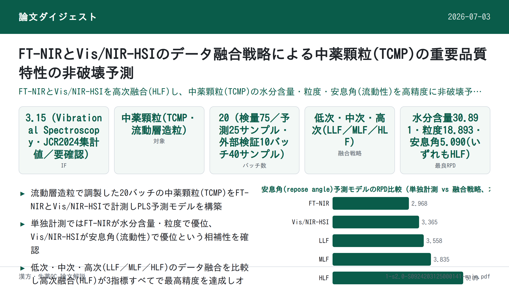

FT-NIRとVis/NIR-HSIのデータ融合戦略による中薬顆粒(TCMP)の重要品質特性の非破壊予測

<!-- 方針: ほぼ全訳＋必要に応じた補足。原文構成に沿って訳出。「> 補足:」は訳者注。数値・条件は原文どおり。図版はGoogle Drive経由でのPDF画像抽出ができなかったため本文中には埋め込まず、該当箇所に「原文参照」と付記した。Table 1（DoE表）は原文のテキスト抽出時に見出しセルの並びが崩れており、列と6因子の対応を確実に復元できなかったため、判明した範囲のみ明記し他は「原文参照」とした。 -->
書誌情報
- 原題: Development of a data fusion strategy combining FT-NIR and Vis/NIR-HSI for non-destructive prediction of critical quality attributes in traditional Chinese medicine particles
- 著者・所属: Ziqian Wang(王子倩) a,b, Xinhao Wan(万馨昊) a, Xiaorong Luo(羅小蓉) d, Ming Yang(楊明) a, Xuecheng Wang(王学成) a, Zhijian Zhong(鍾志堅) d, Qing Tao(陶青) c,＊, Zhenfeng Wu(伍振峰) a,＊＊
- a 江西中医薬大学 中医薬経典名方現代化国家重点実験室（江西省南昌市）
- b 江西省薬品検査センター（江西省南昌市）
- c 江西中医薬大学 計算機学院（江西省南昌市）
- d 華潤江中製薬集団有限公司（江西省南昌市）
- ＊責任著者（Qing Tao）、＊＊連絡先（Zhenfeng Wu, 中医薬現代製剤教育部重点実験室）
- 掲載誌・巻号・DOI: Vibrational Spectroscopy 137 (2025) 103780（Elsevier B.V.）。2024年11月27日投稿受理、2025年1月12日改訂稿受理、2025年1月30日採択、2025年2月1日オンライン公開。https://doi.org/10.1016/j.vibspec.2025.103780
- インパクトファクター: 3.15（Vibrational Spectroscopy, JCR 2024相当・Q1帯との情報あり／Clarivate公式ポータルへの直接アクセスができず複数の二次集計サイトの数値を突き合わせた値のため要確認。5年IFは2.8前後との情報もある）
- キーワード: Traditional Chinese Medicine particle（中薬顆粒） / FT-NIR / Vis/NIR-HSI / Multi-source data fusion（多源データ融合） / Critical quality attributes（重要品質特性） / PAT platform
- ライセンス: 0924-2031/© 2025 Elsevier B.V. All rights are reserved, including those for text and data mining, AI training, and similar technologies.
補足: TCMP = Traditional Chinese Medicine Particle（中薬顆粒、中成薬・漢方エキス顆粒剤の中間体または最終製品）。FT-NIR = フーリエ変換近赤外分光法。Vis/NIR-HSI = 可視/近赤外ハイパースペクトルイメージング。CQA = Critical Quality Attribute（重要品質特性）。CMA = Critical Material Attribute（重要原料特性）。CPP = Critical Process Parameter（重要工程パラメータ）。PAT = Process Analytical Technology（プロセス分析工学、FDAが提唱する製造工程のリアルタイム品質管理の枠組み）。PLS = 部分最小二乗回帰。LLF/MLF/HLF = 低次(low-level)・中次(mid-level)・高次(high-level)データ融合。RPD = Relative Percentage Deviation（相対予測偏差比）で、値が大きいほどモデルの予測能力が高いことを示す。
要旨（Abstract）
本研究は、中薬顆粒(Traditional Chinese Medicine Particles, TCMP)の重要品質特性(CQAs)を予測するデータ融合戦略を開発するにあたり、フーリエ変換近赤外分光法(FT-NIR)と可視/近赤外ハイパースペクトルイメージング(Vis/NIR-HSI)の相補的な能力を検討したものである。本研究は、これらの技術を先進的なプロセス分析工学(PAT)プラットフォームへ統合することに主眼を置く。分子特性評価に優れたFT-NIRと空間的な品質評価に優れたVis/NIR-HSIそれぞれの強みを活かし、予測精度を高めるための複数のデータ融合戦略を評価した。流動層造粒法により20バッチのTCMPを製造し、その特性をFT-NIRとVis/NIR-HSIで特性評価した。比較解析の結果、水分含量および粒度の単独予測においてはFT-NIRがVis/NIR-HSIを上回った。続いて、両分光範囲の相補的情報を組み合わせるための高度な融合スキームを開発し、部分最小二乗(PLS)モデルを構築した。評価した3つの融合レベルのうち、高次融合戦略(HLF)が流動性・粒度・水分含量について最も精度の高い予測を達成した。本研究は、FT-NIRとVis/NIR-HSIデータの高次融合がTCMPのCQA予測の効率と精度を大幅に改善しうることを示すものである。さらに、本アプローチは顆粒状医薬品の迅速かつ非破壊的な品質分析を可能にし、リアルタイムのオンラインモニタリングを実現し、自動化された医薬品安全プロセス管理を推進するための実践的知見を提供する。
1. 序論（Introduction）
造粒は経口固形製剤の製造における重要な工程であり、医薬品製剤において中心的な役割を果たす。均一な粒径と一貫した外観を持つ粒子を製造することは、流動性や溶解性といった原料の物理的特性を高め、正確な投薬や優れた携帯性といった利点をもたらす[1,2]。これらの粒子は、顆粒剤やカプセル剤のような最終製品そのものになる場合もあれば、錠剤製造における中間体として、良好な圧縮成形性が求められる場合もある。造粒工程は、原料の水分含量の変動や混合時間・造粒速度などの工程条件の変動を含め、変動性と複雑性を伴うため、重要原料特性(CMAs、例えば原料の粒度・流動性)、重要工程パラメータ(CPPs、例えば造粒温度・結合剤添加速度)、および周囲湿度や操作者の取り扱いといった外的要因を効果的に管理することが不可欠である。これらの管理は、重要品質特性(CQAs)—製品の品質・安全性・有効性を確保するために所定の範囲内に維持されるべき物理的・化学的・生物学的・微生物学的な特性—を制御するうえで極めて重要である。造粒工程におけるCQAsには均一性・溶出速度・安定性が含まれ、これらは高品質な経口固形製剤を一貫して製造するために不可欠である。例えば、水分含量(CMA)や造粒温度(CPP)の管理が不十分だと、顆粒の流動性(CQA)が低下し、後続工程に悪影響を及ぼしうる。近年の研究は、造粒工程の最適化と製品品質の向上のために、CMAs・CPPs・CQAsを体系的に管理することの重要性をさらに強調している[3–5]。
造粒に影響する要因の理解を深めるため、多くの研究がCQAsの評価を改善するために単一または複数のPATツールを活用してきた[6]。流動性・粒度・水分含量といった特性は、打錠時の圧縮性・緻密化・付着性に大きく影響し、最終的に錠剤の品質を左右するため重要である[7–9]。例えばNIR分光法は広く用いられるPATツールであり、水分含量と粒度をリアルタイムでモニタリングし、工程パラメータの動的な調整を可能にするために用いられてきた。同様に、ラマン分光法は化学的均一性を評価し、造粒中の製品品質の一貫性を確保するために利用されてきた。様々なPATツールが、製剤科学における製品品質のモニタリングと管理のために広く採用されている[10,11]。これらのツールは、粒度や水分含量など単一のCQAをモニタリングするツールと、複数の特性を同時に評価するマルチCQAモニタリングツールに分類できる。しかし、中薬顆粒(TCMP)の造粒は、原料特性の変動性に起因する固有の課題を抱えている。TCMPの原料の大半は複雑な化学組成・高い吸湿傾向・強い付着性・多様な物理化学的特性を持つ生薬エキスである[12]。さらに一部の薬物は、不均一な粒度・密度、流動性の低さ、層状化する傾向を持つ原末を含む。従来の造粒工程は、これらの特性ゆえにTCMPへ直接適用することが難しい。品質評価と終点検出のための従来のオフラインモニタリング法は、これらの課題に対応するために必要なリアルタイムのフィードバックを欠いており、しばしば非効率性や不整合を招く[13]。これに対しNIR分光法やラマン分光法などのPATツールは、流動性・水分含量・化学的均一性といったCQAsを検出できるリアルタイムモニタリング能力を提供する[14–16]。これらのツールは製造工程の設計・解析・制御を促進し、サイクルタイムを短縮し、最終製品の品質を確保するため、TCMP造粒の複雑な要件に特に適している。同時に、造粒工程中のCQAsをモニタリングするために単一または複数のPATツールを活用する傾向がますます強まっている。このアプローチは多変量データ処理技術と組み合わさることで、造粒の理解と制御を高める予測モデルの開発を促進する[17]。
フーリエ変換近赤外分光法(FT-NIR)と可視/近赤外ハイパースペクトルイメージング(Vis/NIR-HSI)は、食品・医薬品業界で広く用いられる迅速・非破壊的な技術である。FT-NIRはFDAのPAT産業ガイダンスの不可欠な一部として、所与の分布内の粒度の微妙な変動を検出し、圧縮粒子の変形特性を評価することに優れる[18]。さらにFT-NIRは、粒子の水分含量と流動性を求めるために頻繁に用いられ、CQAsをモニタリングするうえで価値あるツールとなっている[19]。しかしFT-NIR単独ではTCMPの解析に限界があり、そのCQAsを正確に予測するために必要な複雑な物理的・化学的特性を完全に捉えられない場合がある。もう一つの迅速・非破壊的手法であるVis/NIR-HSIは、イメージングと分光法を組み合わせることで空間分解された品質データを提供し、顆粒の内部・外部双方の特性を捉えることでFT-NIRを補完する。FT-NIRが分子特性評価に優れる一方、Vis/NIR-HSIは均一性や粒度変動といった空間分布を評価する能力を追加する。これらの相補的な強みにより、両者の統合はTCMPにおけるCQAsのモニタリングに特に有益である。例えば、流動性・化学的均一性・顆粒均質性といった追加的なCQAsも、これらの技術を用いて効果的にモニタリングできる。近年、ハイパースペクトルイメージングは医薬品分野での応用が拡大している。これらの技術は造粒における重要特性のモニタリングにますます適用されている。例えばTaoらは、造粒工程中の水分含量・粒度分布・4種の生物活性成分の含量をモニタリングするハイパースペクトル画像解析法を開発した[20]。これは、Vis/NIR-HSIがFT-NIRを補完し、医薬品製造における複雑なCQAsのモニタリングを強化する可能性を示している。
FT-NIRやVis/NIR-HSIのような単一技術は医薬品業界のCQAsモニタリングにおいて広く研究・応用されてきたが、限定的なスペクトル範囲や不完全なデータカバレッジといった限界から、データ融合法の活用が必要となる。現行の分光・ハイパースペクトルイメージングシステムは、センサ製造上の課題により400〜2500 nmの全範囲をカバーすることは稀である。したがって、それぞれ384.4〜1004.6 nm(CMOS検出器)と1000〜2500 nm(InGaAs検出器)の範囲に感度を持つ2つの検出器を用いることは、実用的な解決策である[21]。例えばFT-NIRは分子特性と水分含量の解析に優れ、Vis/NIR-HSIは空間分布と粒度データを提供するため、両者の統合はTCMPにとって特に価値がある。複数の測定機器からの情報を組み合わせるデータ融合は、相補的なデータを統合することでプロセス理解と制御を強化し、これらの限界に対処する。例えばFT-NIRとVis/NIR-HSIのデータを組み合わせることで、TCMPの重要なCQAである粒度と水分含量の予測を改善できる。データ融合は低次・中次・高次の3つのレベルに分類され、スペクトル情報を統合するための体系的なアプローチを提供する[22,23]。低次データ融合(LLF)では、前処理済みの生スペクトルデータが直接組み合わされる。例えばFT-NIRとVis/NIR-HSIのスペクトルを統合して包括的なスペクトルカバレッジを提供する。このアプローチは異なるスペクトル範囲からの相補的情報を捉え、粒子特性の微妙な変動の検出に特に有効である。中次データ融合(MLF)では、化学組成や粒度といった主要な特徴が異なるデータソースから抽出され、モデリングと解析のために統合される。例えばFT-NIR由来の水分含量とVis/NIR-HSI由来の空間的粒子分布を組み合わせることで、TCMPの化学的属性と空間的属性の両方を捉え、CQAsの予測精度を高めることができる。高次データ融合(HLF)は、個々のモデルの予測(例えば水分含量と流動性の別々のモデル)を集約し、最終的な判断を下す。このアプローチは各モデルの強みを活かして意思決定の質を高めるうえで特に有用である。データ融合は、粒度・密度・水分吸収レベルの不規則性といった原料特性の本質的な変動性のため、TCMPにとって特に価値がある。この変動性には従来の手法では効果的に対処することが難しい。例えばCasianらは、NIRスペクトルデータと粒度分布を統合して錠剤製造の管理を改善することで、高次データ融合の可能性を実証した[18]。同様にFuらは、高次データ融合によりNIRとAE(音響放出)技術を組み合わせ、粒度解析の精度と信頼性を高めた[24]。その有望性にもかかわらず、FT-NIRとVis/NIR-HSIをデータ融合と組み合わせてTCMPのCQAsを予測した報告はこれまでになく、本研究はこの分野における革新的な貢献となる。
したがって本研究は、TCMPのCQAsをリアルタイムかつ精密に予測するマルチ機器PATプラットフォームを開発するために、FT-NIRとVis/NIR-HSIをデータ融合戦略と統合することを目的とする。具体的な目的は以下の通りである。(1) 個別の分光技術、および低次・中次・高次データ融合を用いて、TCMPのCQAsに対する部分最小二乗(PLS)予測モデルを開発する。(2) 異なる融合戦略間でモデル性能を比較し、最適なデータ融合スキームを特定し、CQAsモニタリングのための堅牢なマルチ機器PATプラットフォームを確立する。本研究で対象とするCQAsは流動性・粒度・水分含量であり、これらはTCMP製造における製品品質と一貫性を確保するうえで重要である。この新規アプローチは、FT-NIRとVis/NIR-HSIの相補的な強みを組み合わせることで、既存の単一技術による手法と比較してより包括的かつ正確な解析を提供する。両技術の独自のスペクトルデータを活用することで、本研究はTCMPのCQAsの包括的・迅速・非破壊的な検出のための革新的な解決策を提案する。本研究の知見は、特に中薬製造の複雑な要件において、オンライン薬物安全モニタリングと医薬品製造の自動化を推進するための理論的・実践的基盤を確立するものと期待される。
2. 材料と方法（Materials and methods）
2.1 材料
本研究で使用したTCMPの構成成分は、中薬エキス末(Chinese materia medica extract powder)・山薬(ヤマイモ)末・砂糖末・デキストリンであり、いずれも江西江中製薬有限公司から調達した。詳細は以下の通り。中薬エキス末は生物活性成分含量が標準化され、微細粉末の形態で供給された。山薬末は100〜120メッシュの粒度に加工された。砂糖末は純度99%以上の医薬品グレードのショ糖であった。デキストリンはデキストロース当量(DE値)10〜15の医薬品グレードであった。本研究で使用した原料はすべて医薬品グレードであり、関連する薬局方の規格を満たすものであった。
2.2 試料調製
20バッチのTCMPを、6因子・各2水準の部分要因実験計画法により調製した。造粒温度・乾燥時間・結合剤濃度・吸気圧力・噴霧圧力・供給速度は、表1に示す配置行列に従って変化させた。造粒は固定した原料比率で流動層造粒機を用いて行った。流動層造粒工程は次の3ステップから構成される。(1) 流動層の加熱、(2) 各種濃度の結合剤の調合とウォーターバスでの加熱、(3) 実験計画で規定された工程パラメータに従った造粒。また、異なる濃度におけるTCMPの処方組成と配合量を表2に示す。
表1 TCMPの調製における因子変動を示すDoE(実験計画)行列
補足: 原文PDFのテキスト抽出では、この表の列見出し(6因子: 造粒温度・乾燥時間・結合剤濃度・吸気圧力・噴霧圧力・供給速度)が本文中で分断され、列の並び順を一意に復元できなかった。ただし列2の数値集合{18, 13, 8}は、下記表2に明記される「結合剤濃度8%／13%／18%」と完全に一致するため、列2＝結合剤濃度(%)であることは確認できる。他の5列については、原文の記載順（造粒温度・乾燥時間・吸気圧力・噴霧圧力・供給速度）と表中の列順が必ずしも一致しない可能性があり、誤った対応付けを避けるため数値のみ原文どおり転記し、正確な列対応は原文表1を参照されたい。No.2・11・17・20は中心点（各因子の中間値: 55・13・0.2・11.5・35・5.5）の繰り返しである。
| No. | 因子A | 結合剤濃度(%) | 因子C | 因子D | 因子E | 因子F |
|---|---|---|---|---|---|---|
| 1 | 65 | 18 | 0.3 | 15.0 | 40 | 8.0 |
| 2 | 55 | 13 | 0.2 | 11.5 | 35 | 5.5 |
| 3 | 65 | 18 | 0.1 | 15.0 | 30 | 3.0 |
| 4 | 45 | 18 | 0.1 | 15.0 | 40 | 3.0 |
| 5 | 65 | 8 | 0.3 | 8.0 | 30 | 8.0 |
| 6 | 45 | 18 | 0.1 | 8.0 | 40 | 8.0 |
| 7 | 65 | 8 | 0.1 | 15.0 | 40 | 8.0 |
| 8 | 65 | 8 | 0.3 | 15.0 | 30 | 3.0 |
| 9 | 45 | 18 | 0.3 | 8.0 | 30 | 3.0 |
| 10 | 45 | 8 | 0.1 | 8.0 | 30 | 3.0 |
| 11 | 55 | 13 | 0.2 | 11.5 | 35 | 5.5 |
| 12 | 45 | 18 | 0.3 | 15.0 | 30 | 8.0 |
| 13 | 45 | 8 | 0.1 | 15.0 | 30 | 8.0 |
| 14 | 65 | 18 | 0.3 | 8.0 | 40 | 3.0 |
| 15 | 45 | 8 | 0.3 | 8.0 | 40 | 8.0 |
| 16 | 65 | 8 | 0.1 | 8.0 | 40 | 3.0 |
| 17 | 55 | 13 | 0.2 | 11.5 | 35 | 5.5 |
| 18 | 45 | 8 | 0.3 | 15.0 | 40 | 3.0 |
| 19 | 65 | 18 | 0.1 | 8.0 | 30 | 8.0 |
| 20 | 55 | 13 | 0.2 | 11.5 | 35 | 5.5 |
原文注記の見出し断片（列順不明のため参考として転記）: 「Drying temperature (℃)」「(%)」「(min)」「Spray pressure (Mpa)」「Feed speed (mL/min)」「Inlet air volume (m3/h)」。
表2 TCMPの処方組成と配合量
| 原料 | 結合剤濃度8% | 結合剤濃度13% | 結合剤濃度18% |
|---|---|---|---|
| 中薬エキス末 (g) | 375 | 375 | 375 |
| 山薬末 (g) | 675 | 675 | 675 |
| 砂糖末 (g) | 1875 | 1875 | 1875 |
| デキストリン (g) | 75 | 75 | 75 |
| 加水量 (mL) | 863 | 502 | 342 |
注: この表は3種の結合剤濃度(8%・13%・18%)におけるTCMPの処方組成と配合量を示す。加水量の値は各結合剤濃度を調製するために必要な水量に対応する。
2.3 CQAの測定
2.3.1 水分含量
TCMP試料の水分含量を求めるため、まず清浄な秤量瓶を105℃のオーブンで1時間乾燥する。取り出した瓶をデシケーター内で室温まで冷却し秤量する。この操作を、連続する測定値の差が2 mg以内になるまで繰り返し、安定した重量を確保する。空瓶の質量をm3として記録する。次にTCMP試料を秤量瓶に加え、試料と瓶の合計質量をm1として記録する。試料を入れた瓶を105℃のオーブンに12時間入れて水分を除去する。この乾燥・秤量操作を、連続する測定値の差が2 mg以内になるまで繰り返し、正確な結果を確保する。乾燥後の試料と瓶の最終質量をm2として記録する。測定した重量を用いてTCMP試料の水分含量(MC)を計算する。MCは乾燥中に除去された水分の割合を反映し、製品の安定性を確保するうえで重要な品質パラメータである。計算には次の式を用いる。
補足: 原文の数式(1)はPDFのテキスト抽出時にレイアウトが崩れ「MC = m1 − m1 − m2 / m3」と表示されていた。直前の定義（m1=試料+瓶の初期質量、m2=乾燥後の試料+瓶の質量、m3=空瓶質量）と、水分含量が「乾燥により除去された水分の割合」であるという記述から、標準的な水分含量計算式として次の形に復元した。原文の正確な数式表記そのものは原文PDFを参照されたい。
MC (%) = (m1 − m2) / (m1 − m3) × 100
2.3.2 粒度
試料の粒度は、Malvern Scirocco 2000乾式分散ユニットを備えたMalvern Mastersizer 2000(Malvern Instruments, Worcestershire, UK)を用い、レーザー回折法による乾式分散モードで測定した。各測定には約3 gの試料を用い、測定時間6秒、分散空気圧2 barとした。Mie散乱理論に基づき動作するMalvern Mastersizer 2000は、その精度と乾式分散への適合性の高さで広く知られており、本研究における粒度解析に理想的な選択であった。D50は造粒工程における重要品質特性(CQA)であり、粒子の流動性に大きく影響するため、本研究ではTCMPの粒度解析にD50を使用した。
2.3.3 流動性
TCMP試料の流動性は、粉体材料の流動性評価用に特化して設計された装置であるBT-1001インテリジェント粉体特性測定器を用いて測定した。約50 gの試料を装置の投入口に加え、直径10 mmの篩を持つ漏斗を均一に通過させて測定プラットフォーム上にこぼし、円錐状の山を形成させた。円錐が安定・対称となり、粉体がプラットフォーム周囲に均一に落下する状態になった時点で供給を停止した。円錐の斜面とプラットフォーム表面のなす角度を安息角として測定した。最終的な安息角は3回の測定値の平均として得た。安息角は粒子の流動性を評価するための重要なパラメータである。本研究では、流動性が悪いと造粒の不均一・粒度分布の不規則性・圧縮時の困難を招き、最終製品の品質に影響しうるため、安息角をTCMPの流動性の指標として用いた。
2.4 FT-NIR分光法
試料の拡散反射スペクトルは、Antaris™ II FT-NIR(Thermo Fisher Scientific Co., Ltd., Waltham, USA)を用いて収集した。装置は分解能8 cm⁻¹、1000〜2500 nmのスペクトル範囲でスキャンするよう設定した。各測定は64回のスキャンからなり、精度を確保するためバックグラウンドスペクトルを1時間ごとに収集した。安定した信号を得るため、分光計は25℃・相対湿度47%未満の管理された条件下で操作し、データ収集前に1時間のウォームアップ時間を設けた。各試料についてスキャンを3回繰り返し、その平均値を以降の統計解析に用いた。FT-NIR分光法は、その迅速・非破壊的な性質と、詳細な分子・組成情報を提供する能力から本研究に採用された。Antaris™ IIモデルは、その高い感度・精度・安定性から特に選定され、TCMPのような複雑な試料の解析に理想的であった。広いスペクトル範囲を捉え反復スキャンを活用することで、本装置は正確な統計モデリングとTCMPのCQA予測に不可欠な、信頼性・再現性の高いデータを確保した。
2.5 Vis/NIRハイパースペクトルイメージング
試料のハイパースペクトル画像は、384.4〜1004.6 nmの波長範囲で動作するVis/NIRハイパースペクトルカメラ(GaiaField-V10, 四川双利合譜科技有限公司, 中国・成都)を用いて撮影した。本装置は128のスペクトルバンドと640点の空間分解能を備え、詳細なスペクトル・空間情報の取得に適している。焦点距離17 mmのレンズを暗箱環境内のカメラに装着し、試料の50 cm上方に設置して均一な照明と外部干渉の最小化を確保した。照明装置は4基の120 Wハロゲンランプで構成し、露光時間とフレーム周期は光強度に基づき5 msに設定した。
正確なスペクトルデータを確保するため、スペクトル画像の撮影前に黒板(blackboard)および白板(whiteboard)の参照画像を取得した。黒板参照画像はカメラの暗電流を、白板参照画像は照明のばらつきと検出器感度の変動を補正するものであり、これにより較正済みの反射率データが確保される。較正処理は、次の式を用いて生のハイパースペクトル画像を反射率画像に変換する。
補足: 原文の数式(2)もテキスト抽出時にレイアウトが崩れ「RC = RS − RW − RD / RD」と表示されていた。直後の定義（RW=白板参照画像、RD=黒板参照画像、RC=較正済み反射率画像、RS=生のハイパースペクトル画像）から、NIR/HSI分野で標準的に用いられる暗電流・白板補正式として次の形に復元した。原文の正確な数式表記は原文PDFを参照されたい。
RC = (RS − RD) / (RW − RD)
ここでRWは白板参照画像、RDは黒板参照画像、RCは較正済み反射率画像、RSは生のハイパースペクトル画像である。
合計100セットのハイパースペクトル画像を取得し、反射率画像に較正した。較正済み画像はENVI 5.3ソフトウェアに取り込み、さらに処理を行った。各試料について関心領域(ROI)を手動で選択し、解析対象の関連領域を分離した。各スペクトルバンドについて、ROI内の全画素の平均スペクトル値を算出した。
本研究におけるVis/NIR HSIの使用は、TCMP解析に大きな利点をもたらす。スペクトル情報と空間情報の両方を捉えることで、HSIは化学組成と物理的特性を同時に評価でき、流動性・粒度・水分含量といったCQAsの予測に理想的である。ROIベースのアプローチにより関連する試料領域のみが解析され、後続のモデリング・解析におけるスペクトルデータの精度と信頼性が高まる。
2.6 データセット分割とスペクトル前処理
Kennard-Stoneアルゴリズム[25]を用いて、計75個・25個のTCMP試料をそれぞれ検量セットと検証セットとして選択した。このアルゴリズムはスペクトル空間内での試料の均等な分布を確保し、モデルの頑健性を高める。スペクトルデータにおけるランダムノイズやベースラインドリフトといった外的要因に起因する誤差に対処するため、データ品質とモデル予測性能を高める複数のスペクトル前処理法を適用した[26]。適用した前処理法は、多重散乱補正(MSC)・標準正規変量変換(SNV)・一次微分(1st)・二次微分(2nd)・一次微分＋SGスムージングフィルタ(1st+SG)・二次微分＋SGスムージングフィルタ(2nd+SG)である。各前処理法の有効性はモデル性能の比較により評価し、予測精度とスペクトル品質を高める能力に基づいて最適な方法を選定した[27]。
2.7 特徴変数選択
スペクトルデータには必須情報と冗長情報の両方が含まれるため、特徴変数選択はモデルの簡素化・計算複雑性の低減・予測性能の向上、特に本研究におけるCQAsの正確な予測にとって重要である[28]。このニーズに対応するため、3つの特徴変数選択法—競合適応再重み付けサンプリング(CARS)・ランダムフロッグ(RF)・モンテカルロ非情報変数除去(MC-UVE)—を用いた。これらの方法は、ノイズを低減し関連するスペクトル情報に焦点を当てることで、予測モデルの効率と精度を高める主要変数を特定した[29–31]。これらの特徴選択法は、高次元スペクトルデータの課題に対処し、より精密な波長選択と堅牢なモデル開発を可能にする。例えばRFを適用した際には、水分含量に関連する波長変数を効果的に特定し、モデル精度を大幅に高めた。これらの方法をモデリング過程に統合することは、TCMP製造における効率的で信頼性の高い予測を確保するCQAsの予測モデル開発という本研究の目標を直接支えるものである。
2.8 マルチソースデータ融合
本研究で用いた3つのデータ融合スキームを図1に示す[32]。低次融合(LLF)では、NIRとハイパースペクトルの前処理済みデータが試料の入力変数として共同で処理される。中次融合(MLF)には2つのシナリオがある。i) NIRデータとハイパースペクトルデータのそれぞれに同一の特徴選択法を用いて特徴変数を選択し、両スペクトルの特徴変数を融合する。これはよく用いられる中間レベルの戦略である[33,34]。ii) FT-NIRとVis/NIR-HSIデータそれぞれに複数の特徴選択法を用いて特徴変数を選択し、両スペクトルについて最良の変数選択結果を融合する。高次融合(HLF)では、NIRデータとハイパースペクトルデータそれぞれについて個別の多変量解析モデルを作成し、その後、各モデルの結果を組み合わせる。本研究では、高次融合の問題を解くために重回帰分析を用いた。重回帰式は以下の通りである。
補足: 原文の式(3)〜(5)には、変数名の表記に内的な不整合が見られる。式(3)は「Yac」（本文の直後の定義では「検量セットの実測値」）を回帰式の左辺に置いているが、式(4)・(5)で予測値として定義される「Ydfpc」「Ydfpv」との対応関係が原文の記述だけでは明確でない（実測値を回帰式で定義する記述は数式上不自然であり、PDFのテキスト抽出時の変数名の乱れ、あるいは原文自体の表記揺れの可能性がある）。以下は原文の記号をそのまま転記したものであり、正確な式の意味は原文PDFの数式画像を参照されたい。
Yac = b + K1・X1,pc + K2・X2,pc (3)
Ydfpc = b + K1・X1,pvc + K2・X2,pvc (4)
Ydfpv = b + K1・X1,pvv + K2・X2,pvv (5)
ここでYacは検量セットの実測値、YdfpcおよびYdfpvはそれぞれ検量セット・検証セットに対する高次データ融合の予測値を示す。X1,pc・X2,pcはそれぞれNIRおよびハイパースペクトル検量セットの予測値、X1,pvv・X2,pvvはそれぞれNIRおよびハイパースペクトル検証セットの予測値を示し、K1・K2はそれぞれNIRとハイパースペクトルの重みを示す。bは重回帰の切片である。以上のデータ融合戦略を通じて、本研究はNIRとVis/NIR-HSIの相補的情報を統合するだけでなく、TCMPのCQAs(例えば流動性・粒度・水分含量)の予測精度を大幅に改善し、TCMP製造工程における品質の一貫性と効率最適化を確保する。
2.9 モデル構築と統計解析
本研究ではPLSモデルを用いて、NIRおよびHSIデータにおける共線性とノイズに対処しつつ、スペクトルデータとTCMPのCQAs(水分含量・粒度・流動性)との関係を効果的にモデル化した。過学習のリスクを最小化しモデルの頑健性を高めるため、最適な主成分数を決定するために10分割交差検証を実施した。モデル性能は、検量(RMSEc)・予測(RMSEp)の二乗平均平方根誤差(RMSE)、および検量(R2C)・予測(R2P)の決定係数(R2)を用いて評価した。加えて、モデルの信頼性を検証するために相対パーセント偏差(RPD)を適用し、RPD値が3を超えると一般に優れた予測能力を示すとされる[35]。これらの指標を組み合わせて用いることで、PLSモデルがTCMPのCQAsの予測精度向上に高い効果を持つことが示され、TCMP製造におけるプロセス制御と品質の一貫性の確保を支える。
2.10 ソフトウェア
The Unscrambler X 10.4はNIRSデータのフォーマット変換と前処理に使用した。SpecViewはハイパースペクトル画像の撮影と黒板・白板較正に、Envi 5.3はROIの選択に使用した。すべてのスペクトルデータ解析とモデル評価はMatlab R2018bを用いて実施した。
3. 結果と考察（Results and discussion）
3.1 スペクトル解析
異なる造粒工程条件下で調製したTCMPの色調・粒度・水分含量・流動性には顕著な差異が見られる。しかし、これらの差異を迅速かつ正確に識別することは依然として困難である(図2)。TCMPの品質評価は外観のみに頼るべきではなく、製造ニーズに沿ったCQAsの定量的な規格を伴うべきである。
20バッチの試料の平均スペクトル値を算出したところ、生のVis/NIR-HSIおよびFT-NIRスペクトルにおいて、異なるCQAsを持つTCMPの平均スペクトル曲線が、同一バンドにおいて類似した振動傾向を示し、ピークの位置と大きさが一貫していることが分かった(図3)。観察された振幅の変動は主に、TCMPのCQAs(粒度・流動性・安定性など)に直接影響する水分含量と化学組成の違いに起因する。図3Aは4000〜10,000 cm⁻¹のスペクトルバンドを示しており、4320 cm⁻¹・5181 cm⁻¹・6896 cm⁻¹・8346 cm⁻¹に4つの明確な吸収ピークが現れている。Ciccorittiら[36]によれば、約4320 cm⁻¹・5181 cm⁻¹・8346 cm⁻¹のピークは水・セルロース・糖の吸収に関連し、6896 cm⁻¹のピークは主要な化学構成成分であるヘスペリジンに対応する。5181 cm⁻¹のピークはO-H伸縮振動と変角振動の組み合わせに由来し、4320 cm⁻¹のピークはC-H部分の変角振動と伸縮振動の組み合わせに起因する[37]。図3Bは各バッチ試料の384.4〜1004.6 nmにわたる平均スペクトルバンドを示す。異なるバッチのスペクトル曲線は同じ傾向を示し、384.4〜410 nmの範囲でわずかな反射率の低下が見られた後、410 nmから増加傾向を示した。960〜980 nm付近には明確な吸収バレーが観察され、これは主に第3・第4倍音および他の結合バンドに関連する[38]。Badaróら(2020)[39]によれば反射率結果にピークが見られるとされるが、本研究では顕著なピークは観察されなかった。Vis/NIR-HSIについては、スペクトル範囲(384.4〜1004.6 nm)が主に可視光領域に集中しているため、生データから異なる化学結合の伸縮振動を区別することが困難である。したがって、ノイズと冗長情報を除去し、主要なスペクトル特徴を増幅することで、TCMPのCQAsの予測精度と信頼性を高める必要がある。
原文参照: 図2「様々な造粒条件下で調製した20バッチのTCMP試料の外観（色調・粒度・表面質感の違いを示す）」、図3「TCMP試料の生スペクトル: (A) FT-NIR (B) Vis/NIR-HSI」については、図版の抽出ができなかったため画像は本ページに掲載していない。原文PDFを参照されたい。
3.2 最適前処理の選択
前処理済みのFT-NIRおよびVis/NIR-HSIデータに基づき、TCMPのCQAsに対する予測モデルを構築した結果を表3にまとめる。安息角・粒度・水分含量の予測について、FT-NIRスペクトルの最適前処理法はそれぞれSNV・一次微分・1st+SGスムージングフィルタであり、RPD値はそれぞれ2.591・10.154・24.295であった。Vis/NIR-HSIスペクトルについては、最適前処理法はそれぞれ1st+SG・二次微分・1st+SGであり、RPD値はそれぞれ2.763・6.991・4.732であった。FT-NIRの粒度予測モデルにおける一次微分のRPD値は1st+SGスムージングフィルタよりもわずかに低かったが、その検量セットのRMSEは試験セットにより近く、より良好な性能を示した。そのため、粒度予測の最適前処理法として一次微分を選択した。前処理法の選定は、スペクトルデータの特性と、検出指標ごとのスペクトル特徴への依存性によって決まる。例えば粒度予測では、一次微分が背景ノイズを効果的に除去し、粒度変動に関連する微妙なスペクトル特徴を強調する。水分含量予測では、水が顕著な吸収ピークを示すため、1st+SGのようなスムージングフィルタがノイズを除去しつつ主要な特徴を保持するのに効果的である。さらに安息角は粒子の物理的散乱特性への依存度が高い一方、水分含量は化学的吸収特徴と密接に関連する。これらの違いは、各指標が異なる前処理法を必要とする理由をさらに説明する。単一の前処理法をすべての場合に普遍的に適用することはできない。冗長情報を除去し重要なスペクトル特徴を強調することで、適切な前処理法の選択はモデル性能を大幅に改善する。これはCQA予測の精度を高めるだけでなく、TCMP製造における品質管理目標の達成にも強力な支援を提供する。
表3 異なる前処理法によるPLSモデリング結果
| 指標 | データ | 手法 | R2c | RMSEC | RMSECV | R2p | RMSEP | RPD |
|---|---|---|---|---|---|---|---|---|
| 安息角(°) | FT-NIR | MSC | 0.687 | 1.223 | 1.726 | 0.854 | 1.205 | 2.552 |
| SNV | 0.693 | 1.212 | 1.814 | 0.862 | 1.187 | 2.591 | ||
| 1st | 0.680 | 1.267 | 1.846 | 0.850 | 1.318 | 2.314 | ||
| 2nd | 0.563 | 1.403 | 1.830 | 0.841 | 1.642 | 1.900 | ||
| 1st+SG | 0.666 | 1.279 | 1.848 | 0.820 | 1.369 | 2.253 | ||
| 2nd+SG | 0.805 | 1.071 | 1.699 | 0.717 | 1.399 | 1.896 | ||
| Vis/NIR-HSI | MSC | 0.819 | 1.109 | 1.617 | 0.628 | 1.353 | 1.627 | |
| SNV | 0.780 | 1.214 | 1.654 | 0.644 | 1.368 | 1.608 | ||
| 1st | 0.811 | 1.074 | 1.360 | 0.794 | 1.130 | 2.130 | ||
| 2nd | 0.781 | 1.092 | 1.684 | 0.883 | 1.047 | 2.684 | ||
| 1st+SG | 0.805 | 1.040 | 1.410 | 0.872 | 0.983 | 2.763 | ||
| 2nd+SG | 0.811 | 1.179 | 1.733 | 0.491 | 1.407 | 1.248 | ||
| 水分含量(%) | FT-NIR | MSC | 0.996 | 0.001 | 0.001 | 0.997 | 0.001 | 17.171 |
| SNV | 0.996 | 0.001 | 0.001 | 0.997 | 0.001 | 16.866 | ||
| 1st | 0.997 | 0.001 | 0.001 | 0.998 | 0.001 | 22.364 | ||
| 2nd | 0.997 | 0.001 | 0.001 | 0.994 | 0.001 | 13.041 | ||
| 1st+SG | 0.997 | 0.001 | 0.001 | 0.998 | 0.001 | 24.295 | ||
| 2nd+SG | 0.999 | 0.001 | 0.001 | 0.997 | 0.001 | 17.574 | ||
| Vis/NIR-HSI | MSC | 0.959 | 0.003 | 0.004 | 0.959 | 0.004 | 3.771 | |
| SNV | 0.959 | 0.003 | 0.004 | 0.963 | 0.004 | 3.833 | ||
| 1st | 0.963 | 0.003 | 0.004 | 0.934 | 0.004 | 3.538 | ||
| 2nd | 0.958 | 0.003 | 0.005 | 0.947 | 0.003 | 4.408 | ||
| 1st+SG | 0.959 | 0.003 | 0.005 | 0.957 | 0.003 | 4.732 | ||
| 2nd+SG | 0.943 | 0.004 | 0.006 | 0.846 | 0.006 | 2.485 | ||
| 粒度(μm) | FT-NIR | MSC | 0.977 | 23.903 | 31.255 | 0.977 | 21.405 | 6.127 |
| SNV | 0.980 | 22.640 | 29.297 | 0.976 | 21.979 | 5.967 | ||
| 1st | 0.991 | 14.710 | 21.476 | 0.991 | 14.240 | 10.154 | ||
| 2nd | 0.992 | 13.843 | 21.333 | 0.988 | 17.690 | 8.511 | ||
| 1st+SG | 0.989 | 15.787 | 22.745 | 0.993 | 12.855 | 11.696 | ||
| 2nd+SG | 0.995 | 10.948 | 20.326 | 0.987 | 16.590 | 8.593 | ||
| Vis/NIR-HSI | MSC | 0.971 | 25.488 | 36.358 | 0.973 | 25.251 | 6.143 | |
| SNV | 0.966 | 27.106 | 34.827 | 0.977 | 23.315 | 6.653 | ||
| 1st | 0.974 | 25.539 | 33.019 | 0.965 | 23.019 | 5.260 | ||
| 2nd | 0.974 | 24.270 | 32.752 | 0.979 | 21.714 | 6.991 | ||
| 1st+SG | 0.966 | 27.387 | 33.146 | 0.976 | 22.914 | 6.515 | ||
| 2nd+SG | 0.976 | 23.552 | 38.932 | 0.956 | 31.709 | 4.651 |
3.3 単独スペクトルを用いた予測結果
続いて、FT-NIRおよびVis/NIR-HSIデータを用いてTCMPの水分含量・粒度・安息角の予測モデルを構築し、それぞれのCQAsに対する最適なモデリング法を表4にまとめた。水分含量と粒度の予測について、FT-NIRモデルのR2およびRPD値はVis/NIR-HSIモデルよりも有意に高く、これらのパラメータに対するFT-NIR分光法の優れた予測精度を示している。これは、分子振動と赤外吸収を解析するFT-NIRの能力が、水分含量と粒度に関連する微妙な化学的変動を捉えられることに起因すると考えられる。さらにNIR分光法は、迅速・非破壊的かつ高感度な性質から、粒子の物理的特性を検出する理想的な方法として広く認識されている[40]。対照的に、安息角の予測についてはVis/NIR-HSIモデルがFT-NIRモデルを上回った。この差異は、両技術の波長間隔の違いから生じている可能性が高い。すなわちVis/NIR-HSIは分光法とイメージングを統合しており、粒子表面からの反射スペクトル情報を捉えることができ、これは安息角などの物理的特性と密接に関連している[41]。
しかしながら、安息角の予測は依然として大きな課題である。一方で、安息角は粒子の形状・大きさ・表面特性に強く影響されるが、これらはスペクトルデータに直接反映されない場合がある。他方で、安息角測定に内在するばらつきがモデル性能に影響を及ぼしうる。今後の研究では、モデリングアルゴリズムの最適化や、3Dイメージングなどの追加技術の統合により、安息角予測をさらに改善できる可能性がある。総じて本研究の結果は、TCMPのCQAs予測におけるFT-NIRとVis/NIR-HSIそれぞれの強みと適用性を明確に示している。FT-NIRは化学成分の定量的な特性評価に優れる一方、Vis/NIR-HSIは物理的特性を捉えるのにより効果的であることが示された。両技術の詳細な比較を提供することで、本研究の結果はTCMPのCQAs予測を改善する、特に異なる粒子属性を区別するうえで、有益な知見を提供する。これらの結果は、TCMPの工程制御と品質最適化を強力に支援するという本研究の全体目標と密接に整合する。
表4 特徴変数選択の異なる手法によるPLSモデリング結果
| 指標 | データ | 手法 | R2c | RMSEC | RMSECV | R2p | RMSEP | RPD |
|---|---|---|---|---|---|---|---|---|
| 安息角(°) | FT-NIR | SNV+RF | 0.717 | 1.145 | 2.032 | 0.862 | 1.154 | 2.664 |
| SNV+CARS | 0.758 | 1.068 | 1.233 | 0.891 | 1.036 | 2.968 | ||
| SNV+MC-UVE | 0.401 | 1.618 | 1.634 | 0.802 | 1.798 | 1.710 | ||
| Vis/NIR-HSI | 1st+SG+RF | 0.829 | 0.969 | 1.694 | 0.855 | 1.026 | 2.646 | |
| 1st+SG+CARS | 0.841 | 0.947 | 1.139 | 0.915 | 0.807 | 3.365 | ||
| 1st+SG+MC-UVE | 0.690 | 1.323 | 1.385 | 0.797 | 1.234 | 2.201 | ||
| 水分含量(%) | FT-NIR | 1st+SG+RF | 0.999 | 0.001 | 0.009 | 0.998 | 0.001 | 20.664 |
| 1st+SG+CARS | 0.999 | 0.001 | 0.001 | 0.998 | 0.001 | 19.673 | ||
| 1st+SG+MC-UVE | 0.971 | 0.002 | 0.002 | 0.982 | 0.002 | 7.401 | ||
| Vis/NIR-HSI | 1st+SG+RF | 0.957 | 0.003 | 0.013 | 0.924 | 0.004 | 3.629 | |
| 1st+SG+CARS | 0.956 | 0.003 | 0.003 | 0.924 | 0.004 | 3.509 | ||
| 1st+SG+MC-UVE | 0.825 | 0.006 | 0.007 | 0.822 | 0.006 | 2.353 | ||
| 粒度(μm) | FT-NIR | 1st+RF | 0.998 | 7.637 | 46.216 | 0.994 | 11.657 | 12.403 |
| 1st+CARS | 0.996 | 9.305 | 10.485 | 0.992 | 13.371 | 10.814 | ||
| 1st+MC-UVE | 0.958 | 31.554 | 35.481 | 0.951 | 39.235 | 3.685 | ||
| Vis/NIR-HSI | 2nd+RF | 0.980 | 20.883 | 79.062 | 0.981 | 20.710 | 7.329 | |
| 2nd+CARS | 0.983 | 19.692 | 25.177 | 0.981 | 20.746 | 7.317 | ||
| 2nd+MC-UVE | 0.939 | 37.378 | 42.787 | 0.956 | 32.178 | 4.717 |
3.4 データ融合を用いた予測結果
LLF戦略に基づく前処理法および特徴変数選択法の結果を表5にまとめる。FT-NIRデータは1557変数、Vis/NIR-HSIデータは128変数を含み、これらを直接統合して1685変数からなるLLFデータセットを構成した。最適化と前処理を経て、このLLFデータセットを用いて安息角予測のための全波長PLSモデルを構築し、R2PおよびRPD値としてそれぞれ0.949・4.259を達成した。この性能は単独スペクトルモデル(FT-NIR: R2P = 0.862, RPD = 2.591; Vis/NIR-HSI: R2P = 0.872, RPD = 2.763)より有意に優れていた。しかしLLFの全波長モデルには多数の冗長・ノイズ変数が含まれており、さらなる次元削減が必要であった。個別データセットでは、最適な前処理後に3つの特徴変数選択法(RF・CARS・MC-UVE)を適用した。これらの方法は変数の数を大幅に削減したものの、粒度と水分含量の予測モデルの改善に対する効果は限定的であった。例えばRFおよびMC-UVEの前処理法では、むしろR2PおよびRPD値の低下が生じ、MC-UVEで最も大きな低下が見られた。さらに、安息角の予測モデルは全波長モデルと比較して性能の低下を示した。これらの結果は、LLF戦略はモデル性能を高めうる一方で、高次元データの取り扱いと予測結果の最適化には限界があることを示唆している。
MLF戦略では、特徴変数選択法のさらなる最適化により、モデルの予測性能が大幅に改善された(図4)。安息角予測については、CARS前処理を用いたFT-NIRとVis/NIR-HSIデータの融合モデルが最良の性能を示し、R2C・RMSEC・R2P・RMSEPの値はそれぞれ0.894・0.722・0.939・0.796であった。そのRPD値(3.835)は、単独スペクトルモデル(FT-NIR: RPD = 2.968, Vis/NIR-HSI: RPD = 3.365)およびLLFモデル(RPD = 3.558)を上回った。粒度予測については、CARS+RF法を用いて構築したMLFモデルが最良の性能を示し、RPD値は12.074であり、単独FT-NIRモデル(RPD = 12.403)よりわずかに低かった。水分含量予測では、RFベースのMLFモデルが優れた性能を示し、R2C・RMSEC・R2P・RMSEP・RPDの値はそれぞれ0.997・0.008・0.995・0.001・12.290であった。総じてMLFモデルは複数のデータソースからの物理化学的特性を効果的に統合し、特に粒度と水分含量に対するCQAsの予測精度を大幅に高めた。
補足: 上記段落中「LLFモデル(RPD = 3.558)」という記述は、直前の3.3節末尾で報告されたLLF全波長モデルの安息角RPD値(4.259)とは一致しない。表5のLLF安息角の行を見ると、「1st+CARS」の組み合わせでRPD = 3.558が得られており、原文の当該箇所はLLFの中でも特徴選択(CARS)を適用したサブモデルを指して比較している可能性が高い。原文自体にこの表記のゆれがあるため、忠実に翻訳し補足として付記した。
MLFと比較して、HLF戦略はさらに全体的な予測性能を改善した(図5)。HLFモデルでは、安息角予測にはCARS法が最良であり、水分含量にはRFが最適であり、粒度予測にはRF+CARSが最良の結果を達成した。重回帰分析により、FT-NIRデータが融合モデルへの寄与度がより大きいことが明らかになり、これは単独スペクトルモデルおよびLLFモデルの結果と一致する。他のモデルと比較して、HLFモデルは安息角・粒度・水分含量についてそれぞれ5.090・18.893・30.891という有意に高いRPD値を達成した。さらにHLFモデルのRMSEC値はそれぞれ0.664・7.811・0.001まで大幅に低下した。これらの結果は、HLFモデルがMLFおよびLLFモデルより予測性能で優れているだけでなく、特に粒度と水分含量の予測において、より高い安定性と信頼性を示すことを示している。
要約すると、本研究は低次・中次・高次融合戦略のTCMPのCQAs予測における性能を明示的に比較した。結果は、単独スペクトルモデルと比較して、融合戦略がFT-NIRとVis/NIR-HSIデータからの相補的情報を効果的に統合し、予測精度とモデルの安定性を大幅に改善することを示している。特に、分光技術とイメージング技術を組み合わせたHLFモデルは、TCMPの品質管理指標の予測を著しく強化し、複雑な試料の解析におけるデータ融合の可能性と価値を実証した。これらの知見は、TCMP製造工程における品質管理戦略の最適化にとって重要な参照情報を提供する。
原文参照: 図4「MLFモデルに基づく結果の棒グラフ: (A) 安息角(°) (B) 水分含量(%) (C) 粒度(μm)」、図5「3つの異なるレベルの融合モデルに基づく結果の棒グラフ: (A) 安息角(°) (B) 水分含量(%) (C) 粒度(μm)」は図版の抽出ができなかったため本ページには掲載していない。原文PDFを参照されたい。
表5 低次融合データの異なる前処理・特徴選択法によるPLSモデルの比較
| 指標 | データ | 手法 | R2c | RMSEC | RMSECV | R2p | RMSEP | RPD |
|---|---|---|---|---|---|---|---|---|
| 安息角(°) | LLF | MSC | 0.870 | 0.835 | 1.308 | 0.826 | 1.203 | 2.410 |
| SNV | 0.854 | 0.886 | 1.358 | 0.809 | 1.254 | 2.314 | ||
| 1st | 0.882 | 0.799 | 1.142 | 0.949 | 0.689 | 4.259 | ||
| 2nd | 0.907 | 0.708 | 1.057 | 0.907 | 0.895 | 3.281 | ||
| 1st+SG | 0.876 | 0.818 | 1.285 | 0.945 | 0.740 | 3.975 | ||
| 2nd+SG | 0.902 | 0.786 | 1.233 | 0.861 | 0.935 | 2.683 | ||
| 1st+RF | 0.924 | 0.642 | 2.207 | 0.933 | 0.786 | 3.736 | ||
| 1st+CARS | 0.888 | 0.773 | 0.871 | 0.919 | 0.825 | 3.558 | ||
| 1st+MC-UVE | 0.425 | 1.724 | 1.797 | 0.754 | 1.821 | 1.613 | ||
| 水分含量(%) | LLF | MSC | 0.997 | 0.001 | 0.001 | 0.996 | 0.001 | 15.880 |
| SNV | 0.997 | 0.001 | 0.001 | 0.998 | 0.001 | 19.507 | ||
| 1st | 0.997 | 0.001 | 0.001 | 0.994 | 0.001 | 13.136 | ||
| 2nd | 0.997 | 0.001 | 0.001 | 0.997 | 0.001 | 16.638 | ||
| 1st+SG | 0.997 | 0.001 | 0.001 | 0.995 | 0.001 | 13.479 | ||
| 2nd+SG | 0.998 | 0.001 | 0.001 | 0.997 | 0.001 | 16.927 | ||
| SNV+RF | 0.998 | 0.001 | 0.009 | 0.998 | 0.001 | 20.187 | ||
| SNV+CARS | 0.998 | 0.001 | 0.001 | 0.998 | 0.001 | 20.138 | ||
| SNV+MC-UVE | 0.986 | 0.002 | 0.002 | 0.995 | 0.002 | 10.068 | ||
| 粒度(μm) | LLF | MSC | 0.990 | 15.798 | 21.902 | 0.989 | 14.564 | 9.630 |
| SNV | 0.993 | 13.344 | 18.541 | 0.987 | 15.959 | 8.790 | ||
| 1st | 0.990 | 15.678 | 20.244 | 0.987 | 13.130 | 8.423 | ||
| 2nd | 0.992 | 13.726 | 20.297 | 0.991 | 12.984 | 10.117 | ||
| 1st+SG | 0.990 | 16.072 | 20.502 | 0.990 | 11.107 | 9.954 | ||
| 2nd+SG | 0.993 | 13.443 | 19.769 | 0.988 | 14.310 | 8.854 | ||
| 2nd+RF | 0.994 | 12.431 | 43.629 | 0.987 | 14.939 | 8.793 | ||
| 2nd+CARS | 0.993 | 12.776 | 14.386 | 0.992 | 12.301 | 10.679 | ||
| 2nd+MC-UVE | 0.970 | 26.271 | 27.706 | 0.972 | 21.918 | 5.993 |
3.5 モデル比較
一般に、単独スペクトルモデルの予測結果が不十分な場合、予測精度をさらに高めるためにデータ融合法が用いられる[42]。本研究では、FT-NIRおよびVis/NIR-HSIモデルは粒度・水分含量の予測において優れた性能を示したものの、両モデルとも安息角の予測では十分でなかった。単独スペクトルモデルの改善を複数回試みたにもかかわらず、その予測性能は限定的なままであった。この限界は、単独スペクトルモデルが、TCMPのような複雑な試料のCQAsを包括的に特徴付けるうえで重要な、相補的スペクトル情報と空間的変動性を同時に捉えることが難しいことに起因する。データ融合戦略を用いると、LLFおよびMLFモデルは単独のVis/NIR-HSIモデルを上回ったが、単独のFT-NIRモデルの性能を超えることはなかった。この差異は、化学組成の特性評価におけるFT-NIRモデルの優れた予測能力が、Vis/NIR-HSIによる補足的な物理情報の寄与を凌駕したことによると考えられる。さらに、LLFおよびMLFで採用した等重み融合戦略は、近赤外スペクトルの可視領域におけるモデリングの有効性を低下させた可能性があり、これらの融合アプローチの全体的な予測性能を制限したと考えられる。
対照的に、HLFモデルは安息角・粒度・水分含量の予測において最良の性能を示した。図6は、単独スペクトルモデルおよび最良性能の融合モデルの両方に基づく、TCMPの3つのCQAsについての実測値(X)対予測値(Y)の散布図を示す。予測能力の観点から、安息角のランキングはHLF＞MLF＞LLF＞Vis/NIR-HSI＞FT-NIRであった。粒度についてはHLF＞FT-NIR＞MLF＞LLF＞Vis/NIR-HSIであり、水分含量についてはHLF＞FT-NIR＞LLF＞MLF＞Vis/NIR-HSIであった。3つのデータ融合戦略下でのモデル複雑性を比較するため、波長選択・モデリング・データ予測(テスト)に要する時間を評価した。表6に示す通り、モデル複雑性はHLFが最も高く、次いでMLF、LLFが最も低かった。詳細な解析によれば、中次融合と比較してHLFは同じ波長選択手順を用いるが、そのプロセスはまず2つのスペクトルデータセットに対して個別の予測モデルを構築し、その後これらのモデルを重回帰を用いて組み合わせるというものである。これはHLFが3つの予測モデルの構築を必要とする一方、MLFは1つのモデルのみを必要とすることを意味する。したがってHLFのモデル複雑性はMLFよりも高い。一方、LLFと比較すると、MLFは両方のスペクトルデータセットに対する波長選択、すなわち2回の波長選択を必要とするのに対し、LLFは1回のみでよい。したがってMLFのモデル複雑性もLLFより高い。3つの融合戦略でモデル複雑性の差異が観察されるものの、これらの差異は統計的有意性には達していない。したがって、データ融合戦略を選択する際には、モデルの予測精度を主たる焦点とすべきである。
表6 3つのデータ融合戦略のモデリング時間複雑性の解析
| モデル区分 | 波長選択時間(s) | モデリング時間(s) | テスト時間(s) | 複雑性時間(s) |
|---|---|---|---|---|
| LLF | 0.8613 | 0.00098 | 0.0104 | 0.87268 |
| MLF | 1.016 | 0.00071 | 0.0116 | 1.02831 |
| HLF | 1.016 | 0.03428 | 0.0223 | 1.07258 |
注: 複雑性時間 = 波長選択時間 + モデリング時間 + テスト時間
HLFモデルの性能の大幅な向上は、FT-NIRとVis/NIR-HSIデータの強みを統合するHLFモデルの能力に起因すると考えられる。FT-NIRは化学組成と分子構造に関する詳細な情報を提供し、Vis/NIR-HSIは分光法とイメージング技術を組み合わせて粒子特性に関連する物理的特徴を捉える。これらの相補的なデータソースを意思決定レベルで効果的に統合することで、HLFモデルは優れた予測性能を達成した。特筆すべきは、HLFモデルが粒度と水分含量の予測に優れるだけでなく、安息角の予測においても他の手法を大幅に上回った点である。これはさらに、階層的データ融合戦略が多源データの相補性を十分に活用し、単独スペクトルモデルの限界を効果的に克服し、モデル性能の段階的な改善を達成しうることを示している。
原文参照: 図6「安息角(A, B, C, D, E)・水分含量(F, G, H, I, J)・粒度(K, L, M, N, O)の最適モデルの検量セット・検証セットにおける実測値対予測値のパリティプロット(FT-NIR(A, F, K)、Vis/NIR-HSI(B, G, L)、融合データ(C, D, E, H, I, J, M, N, O)に基づく)」は図版の抽出ができなかったため掲載していない。原文PDFを参照されたい。
3.6 高度融合モデルの外部検証
本研究では、HLFモデルが粒子安息角・粒度・水分含量の予測において優れた性能を示した。高度融合モデルの安定性と汎化能力を評価するため、本研究では10の独立バッチ(40試料)からなる外部検証セットに対する予測にこのモデルを使用した。検証過程では、予測値と実測値を比較することでHLFモデルの予測精度を評価した(図7・図8)。図7は外部検証の予測値対実測値の散布図を示しており、結果はHLFモデルが特に安息角と粒度の予測において高い予測精度を維持し、強い線形関係と小さな予測誤差を示したことを示している。図8は図7をより詳細に示したもので、同一バッチ内の試料についての予測値対実測値の散布図を示している。同一バッチ内でいくらかの差異が観察されたものの、予測値は実測値に近い値を維持した。バッチ間・バッチ内試料のいずれも強い線形関係と小さな予測誤差を示した。これはさらに、複雑なスペクトルデータの取り扱いにおける高度融合アプローチの有効性と信頼性を裏付けるものである。結論として、外部検証の結果は、粒子安息角・粒度・水分含量の予測におけるHLFモデルの主導的地位をさらに確固たるものとし、今後の研究と実用化のための強固な基盤を築くものである。
本図(図7)は、複数の実験バッチにわたって測定された3つの異なる特性の実測値と予測値の比較を示す。データは3つのサブプロット(A・B・C)で示され、それぞれ異なる特性を表す: (A) 安息角(°)、(B) 水分含量(MC)、(C) 粒度(D50、mm)。各データ点は特定の実験バッチ(A〜Jで表記)を表し、実測値は赤い点、予測値は黒い点で示される。誤差バーはデータのばらつきを示す。この比較は、外部検証セットの同一バッチ内の試料について行われ、実測値に対するモデル予測の精度を強調するものである。
原文参照: 図7「外部検証セットの予測値と実測値のパリティプロット: (A) 安息角 (B) 水分含量 (C) 粒度」、図8「外部検証セットにおける同一バッチ内試料の実測値対予測値」は図版の抽出ができなかったため掲載していない。原文PDFを参照されたい。
4. 結論（Conclusions）
本研究では、TCMPにおけるCQAs—流動性・粒度・水分含量—を予測するPATプラットフォームを開発するために、データ融合法とPLSアルゴリズムを用いてFT-NIRとVis/NIR-HSIデータを統合した。主要な知見は以下の通りである。
i) Vis/NIR-HSIモデルと比較して、FT-NIRモデルは粒度と水分含量の予測でより高い精度を示した一方、Vis/NIR-HSIモデルは安息角の予測でより優れた性能を示した。
ii) LLFおよびMLFモデルは、粒度と水分含量についてVis/NIR-HSIモデルより優れた予測を提供したが、FT-NIRモデルより精度は低かった。
iii) MLFモデルはすべての指標について予測精度を高め、粒度予測において最も顕著な改善が見られた。
iv) FT-NIRとVis/NIR-HSIデータを統合したHLFモデルは、すべての評価指標において最高の精度を達成した。安息角・粒度・水分含量のRPD値は、単独モデルおよびLLF/MLFモデルと比較して有意に増加した。
既存の手法と比較した本研究の革新性は、データ融合戦略、特にHLFを通じてFT-NIRとVis/NIR-HSI分光技術の利点を有機的に統合した点にある。このアプローチは、化学組成の分子特性を捉えるだけでなく、粒子の物理的特性も反映するため、より高い予測精度と広い適用性を達成する。さらに本手法は、TCMPの造粒工程中のCQAsのリアルタイムオンラインモニタリングを支援し、医薬品プロセスの自動化と品質最適化のための重要な基盤を提供する。その柔軟性ゆえに、本手法は他の複雑な医薬品原料の検出・品質解析にも拡張可能であり、医薬品業界における工程制御と品質管理の新たな解決策を提供する。
これらの成果にもかかわらず、本研究には一定の限界がある。第一に、安息角モデリングに用いたデータセットは多様性を欠いており、これがモデルの予測精度を制約した可能性がある。加えて、本研究ではPLSモデルのみを用い、サポートベクター回帰(SVR)やランダムフォレスト(RF)といった他の回帰法によりモデル性能を高められる可能性については検討しなかった。PLSモデルは製造要件を満たしたものの、今後の研究では、より多様なデータセット・試料を取り入れ、様々な回帰モデリング手法を体系的に評価することで、モデル性能の最適化と頑健性の向上に取り組む予定である。CQA予測の精度と適用性をさらに高めるため、TCMPの化学組成と物理的特性をより詳細に解析するために、深層学習アルゴリズムを統合する計画がある。これらの取り組みは、TCMPの物理化学的特性の包括的な理解と制御を達成し、医薬品企業にリアルタイムのオンライン検出と工程制御のための信頼性が高く効率的なツールを提供することを目指すものである。
訳者補足
- 本論文は、生薬そのものの品質評価(Q-marker探索や成分指紋分析)というよりも、中薬エキス顆粒(TCMP)の製造工程(流動層造粒)における重要品質特性(CQA)を、分光法主体のPAT(プロセス分析工学)手法でリアルタイム予測しようとする、製造・工程管理寄りの論文である。他の多くの収載論文（HPLC指紋・Q-marker系）とは着眼点が異なり、「製造法」「QC・品質評価」の観点から関連性が高い。
- データ融合の「低次(LLF)・中次(MLF)・高次(HLF)」という分類は、分析化学・食品科学分野の非破壊計測(NIR・ハイパースペクトルイメージング等)でよく用いられる枠組みであり、本論文はこれをTCMの造粒工程管理に応用した点が新規性として位置づけられている。
- RPD(相対パーセント偏差)は、検証セットの実測値の標準偏差をRMSEPで割った指標で、一般に3を超えると「優れた予測能力」の目安とされる。本論文のHLFモデルは水分含量でRPD 30.891、粒度でRPD 18.893に達しており、この分野の目安からは非常に高い数値である。ただし原著者ら自身も限界として、安息角モデリングのデータの多様性不足やPLS以外の回帰法(SVR・RF等)を検討していない点を挙げている。
- 図版(Fig.1〜8)はいずれも、本セッションでのGoogle Drive経由PDFダウンロードがセッションエラーのため取得できず、本ページには埋め込めなかった。数値データ(表1〜6)はテキストとして抽出できた範囲をすべて転記している。